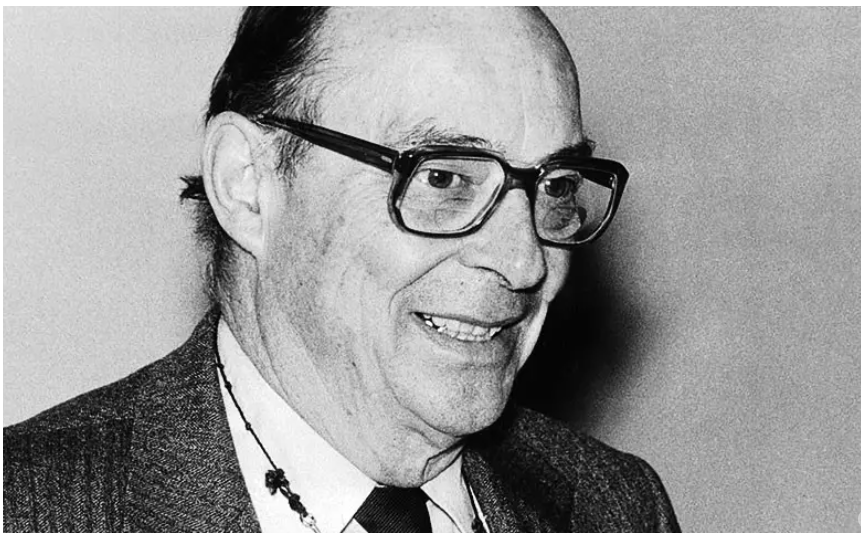

John Bardeen was an American physicist and electrical engineer. He made important contributions to electronics and communication technology. He is famous for co-inventing the transistor, which is a basic component used in almost all modern electronic devices.
• Co-inventor of the transistor in 1947.
• Helped develop semiconductor technology.
• His work made modern computers, mobile phones, and electronic
devices possible.
• Nobel Prize in Physics (1956) for the invention of the transistor.
• Nobel Prize in Physics (1972) for the theory of superconductivity.
• He is the only person to win the Nobel Prize in Physics twice.